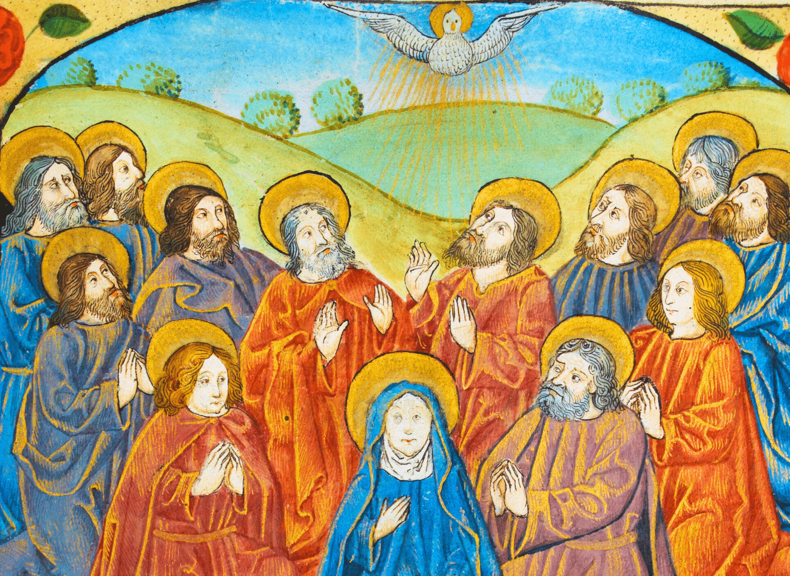
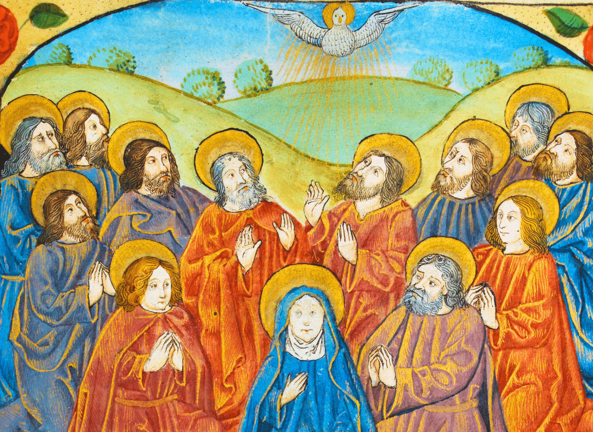

☰
Origin: 1st century CE, Judea (modern-day Israel/Palestine)
Belief: One God; Jesus Christ as the Son of God and Savior
Sacred Text: The Bible (Old & New Testament)
Places of Worship: Churches
Followers Called: Christians
Christianity is a monotheistic religion centered on the life, teachings, and message of Jesus Christ, whom believers regard as the Son of God and the Messiah promised in earlier scriptures. It emphasizes love, compassion, forgiveness, and the belief that salvation comes through faith in Jesus and his sacrifice. The Bible, consisting of the Old and New Testaments, serves as its holy scripture, guiding followers in moral conduct, worship, and spiritual understanding. Christianity has numerous denominations—such as Catholicism, Protestantism, and Orthodoxy—each with its own traditions, practices, and interpretations, yet all united around the core belief in Jesus’ teachings.
Christmas is celebrated on December 25th and honors the birth of Jesus Christ, whom Christians believe is the Son of God and the Savior of humanity. The festival is rooted in the Nativity story, where Jesus was born in Bethlehem to Mary and Joseph, symbolizing humility, hope, and divine love. Religious observances include attending midnight or morning church services, reading Gospel passages, singing carols, and reflecting on God’s gift to the world. Cultural traditions—such as decorating Christmas trees, exchanging gifts, hanging lights, and sharing festive meals—express togetherness, generosity, and joy. While Christmas has become a global holiday celebrated by many non-Christians as well, its spiritual message emphasizes peace, compassion, forgiveness, and renewed faith.
Date: 25th December of roman calendar


Good Friday occurs two days before Easter and commemorates the crucifixion and death of Jesus Christ. It is one of the most solemn days in Christianity, reminding believers of Jesus’ sacrifice for humanity’s forgiveness and salvation. Many Christians attend quiet church services, observe the Stations of the Cross, read the Passion narrative from the Bible, fast, or refrain from celebrations. In some cultures, reenactments of the crucifixion or processions are performed as acts of devotion. The somber mood encourages deep reflection on suffering, justice, selflessness, and the meaning of redemption. Good Friday is not an ending, but a spiritual reminder that hope and resurrection will follow.
Date: Not Fixed


Easter is the most significant Christian festival, celebrating Jesus Christ’s resurrection—believed to have occurred on the third day after his crucifixion. It symbolizes victory of life over death, good over evil, and eternal hope. Churches hold joyful worship services filled with music, flowers, and proclamations of “He is risen.” Families may gather for meals, and cultural customs like Easter eggs, egg hunts, and spring flowers represent rebirth and new beginnings. Unlike Christmas, Easter does not have a fixed calendar date—it falls on the first Sunday after the full moon following the spring equinox. For Christians, Easter is a powerful affirmation of faith, renewal, and God’s promise of salvation.
Duration: Not Fixed


Pentecost occurs fifty days after Easter and marks the moment when the Holy Spirit descended upon Jesus’ disciples, empowering them to spread his teachings. It is often recognized as the “birthday of the Christian Church.” Churches celebrate with readings from the Book of Acts, prayers for unity, and symbols of fire and wind, representing divine inspiration. Pentecost emphasizes guidance, community, and spiritual strength, reminding Christians that their faith calls them to serve, share, and uplift others. Pentecost takes place fifty days after Easter and marks the descent of the Holy Spirit upon the disciples of Jesus, as described in the Book of Acts. This event empowered them to preach and spread the Christian message, which is why Pentecost is often considered the “birthday of the Christian Church.” Churches may use red decorations, symbolizing the Holy Spirit’s fire, and many believers pray for spiritual strength, wisdom, and unity. Pentecost highlights the importance of community, service, and carrying forward Jesus’ teachings. It reminds Christians that faith is not only personal—it is also shared and lived through action.
Duration: Five days after Easter
 
